Hologram OS
Conciliação bancária, classificação contábil e geração do arquivo que o sistema contábil importa. Guia completo para escritórios contábeis e BPOs financeiros.
Este documento descreve, do começo ao fim, o que o Hologram OS faz e como operá-lo. Ele foi escrito para quem vai usar o sistema no dia a dia: sócios de escritórios contábeis, gerentes de carteira, analistas de BPO financeiro e as equipes dos clientes atendidos.
Não é um documento técnico. Nenhum conhecimento de programação é necessário para ler qualquer parte dele. Onde uma regra do sistema existe por um motivo contábil ou de segurança, o motivo está escrito junto, porque saber por que uma trava existe é o que permite confiar nela.
Os capítulos seguem a ordem real de trabalho. Primeiro o vocabulário e os perfis de acesso, depois a preparação de um cliente novo, em seguida o fechamento mensal (conciliação), a ponte para a contabilidade, a carteira de títulos e, por fim, administração e segurança. Quem já usa o sistema pode ir direto ao capítulo que precisa; quem está conhecendo agora ganha mais lendo na ordem.
Capítulo 1
Todo mês, alguém no escritório abre o extrato de um cliente, abre o ERP dele e compara linha por linha. Depois classifica o que não estava classificado, corrige o que veio errado e monta o lote que entra no sistema contábil. O Hologram OS faz esse caminho inteiro, e faz de um jeito auditável: cada decisão fica registrada, com autor e data.
O que muda não é a natureza do trabalho, é quanto dele precisa ser feito à mão. A leitura do arquivo, a comparação com o ERP, a montagem da partida e a geração do arquivo contábil passam a ser do sistema. A decisão continua sendo de quem entende de contabilidade.
As etapas 2 a 4 acontecem em segundo plano. Quem enviou o arquivo pode fechar a tela e continuar trabalhando: uma notificação avisa quando a conciliação termina.
O arquivo do banco chega em qualquer formato, e é a IA que transforma aquilo em linhas estruturadas. Daí em diante, nada é estatístico: o cruzamento com o ERP é aritmética pura, com tolerâncias fixas e publicadas. Um lançamento nunca é considerado conciliado porque um modelo achou parecido.
Os dados de um cliente são cifrados com uma chave exclusiva dele, e o escritório vizinho hospedado na mesma plataforma não alcança nem o nome dos seus clientes. O próprio cliente final pode receber acesso e enxergar apenas o que é dele.
A conciliação é o começo. A plataforma leva o mês inteiro até o arquivo que o sistema contábil importa, com débito, crédito, valor, data e histórico, montado a partir das decisões que o escritório tomou uma única vez.
Capítulo 2
Sete palavras aparecem o tempo todo no sistema e têm significado preciso. Vale ler esta lista uma vez; ela evita a maior parte das dúvidas de operação.
| Termo | O que significa aqui |
|---|---|
| Organização | O escritório contábil ou BPO que usa o Hologram OS. Cada organização tem seus próprios clientes, sua equipe e seu catálogo de configurações. Uma organização nunca enxerga a outra. |
| Cliente | A empresa atendida pela organização. É a unidade de tudo: conciliações, contas, plano de contas e usuários pertencem a um cliente. |
| Origem | De onde vêm os lançamentos do cliente. Hoje existem duas: a conexão com o ERP Omie e o envio de arquivo (planilha ou extrato), para o cliente que não tem ERP. |
| Conciliação | O confronto de uma conta bancária com o ERP em um mês. Uma conciliação corresponde sempre a uma conta e um mês, mesmo que o extrato tenha vindo quebrado em vários arquivos. |
| Competência | O mês a que os dados se referem, no formato mês e ano. É o recorte usado pela ponte contábil, que trabalha com o mês inteiro do cliente, e não com uma conta isolada. |
| De-para | A decisão de para onde cada categoria de origem vai, em cada destino. A mesma categoria pode ter decisões diferentes em destinos diferentes. |
| Destino | O uso que se dá à classificação: conta contábil, demonstrativo, fluxo de caixa e outros. Cada destino tem seu próprio conjunto de decisões. |
| Materialização | O fechamento de uma competência em um destino. Congela o que foi decidido, numa versão que não muda mais. É dela que sai o arquivo contábil. |
Contador reconhece esse recorte, e ele evita o erro mais caro da conciliação: misturar dois períodos no mesmo confronto. Se o extrato do mês vier em três partes, as três entram na mesma conciliação e formam um resumo só. Tentar criar uma segunda conciliação para a mesma conta e o mesmo mês é recusado, com a indicação de anexar o arquivo à existente.
Esta é a distinção que mais confunde no começo, e o sistema mantém os dois nomes separados de propósito.
O de-para é exatamente a ponte entre os dois: pega a categoria que veio da origem e diz em que conta do plano contábil ela entra.
Capítulo 3
São cinco perfis. Três pertencem à organização e dois pertencem ao cliente final. O perfil define o que a pessoa pode fazer; o alcance (quais clientes ela enxerga) é definido separadamente, pela carteira.
| Perfil | Quem é | Alcance |
|---|---|---|
| Administrador da plataforma | Quem opera o Hologram OS como produto, dá suporte e cadastra organizações. | Todas as organizações. |
| Administrador | Sócio ou responsável pelo escritório. Cadastra clientes, define a equipe e configura o catálogo da organização. | Todos os clientes da própria organização. |
| Gerente | Quem toca a carteira: cadastra cliente, conecta origem, concilia, classifica e fecha o mês. | Somente os clientes da própria carteira. |
| Gerente do cliente | Pessoa da empresa atendida, com autonomia: concilia, classifica, mantém o glossário e gere os usuários dela. | Somente a própria empresa. |
| Operador do cliente | Pessoa da empresa atendida, com acesso operacional: envia arquivo, concilia, revisa e exporta. | Somente a própria empresa. |
| Ação | Admin. plataforma |
Admin. | Gerente | Gerente do cliente |
Operador do cliente |
|---|---|---|---|---|---|
| Criar e rodar conciliação | sim | sim | sim | sim | sim |
| Revisar e exportar relatório | sim | sim | sim | sim | sim |
| Enviar arquivo do cliente | sim | sim | sim | sim | sim |
| Sincronizar contas bancárias | sim | sim | sim | sim | sim |
| Manter o glossário | sim | sim | sim | sim | não |
| Editar o de-para | sim | sim | sim | sim | não |
| Configurar o mapeamento do arquivo | sim | sim | sim | sim | não |
| Sincronizar plano de contas, títulos e movimentos | sim | sim | sim | sim | não |
| Registrar contexto de título | sim | sim | sim | sim | não |
| Gerir os usuários do cliente | sim | sim | sim | sim | não |
| Gerar o arquivo contábil | sim | sim | sim | não | não |
| Importar o plano contábil | sim | sim | sim | não | não |
| Gerir conexões de origem | sim | sim | sim | não | não |
| Criar cliente | sim | sim | sim | não | não |
| Editar e encerrar cliente | sim | sim | não | não | não |
| Gerir a equipe da organização | sim | sim | não | não | não |
| Configurar layouts de exportação | sim | sim | não | não | não |
| Redefinir a senha de um usuário | sim | não | não | não | não |
| Cadastrar organizações | sim | não | não | não | não |
Quando um perfil não tem uma permissão, o botão correspondente não aparece para ele. Isso não é só estética: a mesma regra é aplicada no servidor, de modo que ninguém consegue executar uma ação por um caminho alternativo. O operador do cliente, por exemplo, vê a tela do de-para e a prévia, mas não encontra o botão de decidir.
Um cliente pode ter vários gerentes com acesso e sempre um único responsável. O responsável é quem aparece na coluna Gerente Responsável da lista e é a quem se cobra o fechamento; os demais entram como colaboradores, com o mesmo acesso. Trocar o responsável não tira o acesso de ninguém, e o sistema não permite deixar um cliente ativo sem responsável.
Capítulo 4
O acesso é por e-mail e senha. Se a combinação estiver errada, a mensagem é sempre a mesma, sem dizer se o problema foi o e-mail ou a senha: é uma proteção contra quem tenta descobrir quais e-mails existem no sistema. Depois de cinco tentativas em cinco minutos, novas tentativas são bloqueadas temporariamente.
Quem esquece a senha fala com o administrador da conta. A redefinição é feita pela administração do Hologram OS e, ao ser feita, encerra imediatamente todas as sessões abertas daquele usuário, que precisa entrar de novo com a senha nova.
A navegação tem dois níveis. Fora de um cliente, o menu mostra a lista de clientes e, para quem administra, a seção Configurações. Ao entrar em um cliente, o menu passa a mostrar as seções daquele cliente em três grupos: Operação (painel, conciliações, carteira, de-para e origem por arquivo), Cadastros (contas bancárias, glossário e os dois planos de contas) e Acesso (usuários). Um número ao lado de conciliações, carteira e de-para mostra o que está pendente em cada uma.
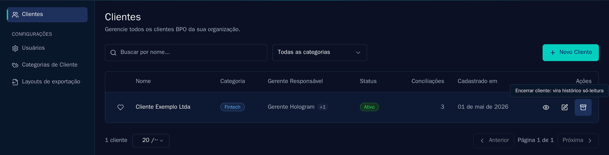
O sino no alto da tela avisa quando um processamento termina, com ou sem erro. É por isso que não é preciso ficar esperando na tela de uma conciliação: envia-se o arquivo, sai-se da tela e o sino chama de volta.
A interface tem três temas: Hologram, no azul-marinho da marca, que é o padrão; claro; e escuro. A escolha fica salva no navegador. Todas as imagens deste manual estão no tema Hologram.
Capítulo 5
Um cliente novo leva poucos minutos para começar a conciliar, e mais alguns para ficar pronto para a ponte contábil. Esta é a ordem que evita retrabalho.
Em Clientes, o botão Novo Cliente abre o formulário. Só o nome é obrigatório; a categoria é opcional e serve para organizar a lista (por exemplo, Fintech, Comércio, Serviços). As categorias disponíveis são definidas pela organização, em Configurações.
O cadastro tem um interruptor para conectar o ERP Omie na hora. Se a credencial ainda não estiver em mãos, basta deixá-lo desligado: o cliente nasce sem origem, e a conexão pode ser feita depois. Um cliente sem origem é um cliente válido, ele apenas ainda não tem de onde puxar lançamentos.
Quando um gerente cria o cliente, ele já entra como responsável. Quando um administrador cria, o cliente nasce sem responsável e o primeiro gerente adicionado assume o posto.
A origem é de onde vêm as contas e os lançamentos. Ela é configurada em Contas Bancárias, na seção Origens de dado, no topo da tela: lá ficam o tipo, a situação e quando a conexão foi verificada pela última vez.
Um cliente que já recebe lançamentos do Omie não pode também receber por arquivo, e vice-versa. Se fosse permitido, a mesma movimentação poderia entrar duas vezes por caminhos diferentes. Para trocar de origem, remove-se a conexão existente e cria-se a nova.
O estado da origem é calculado na hora, e é ele que decide quais telas ficam liberadas:
A tela Contas Bancárias mostra as contas correntes, aplicações e cartões que o cliente tem cadastrados na origem. É dessa lista que se escolhe a conta ao criar uma conciliação.
A lista é atualizada automaticamente uma vez por dia e pode ser forçada a qualquer momento. Contas novas criadas no ERP aparecem na próxima sincronização.
Esta tela mostra a classificação que o ERP do cliente já tem: o código de cada categoria, o nome, a situação e, principalmente, a conta de demonstrativo que a própria origem já vincula a ela.
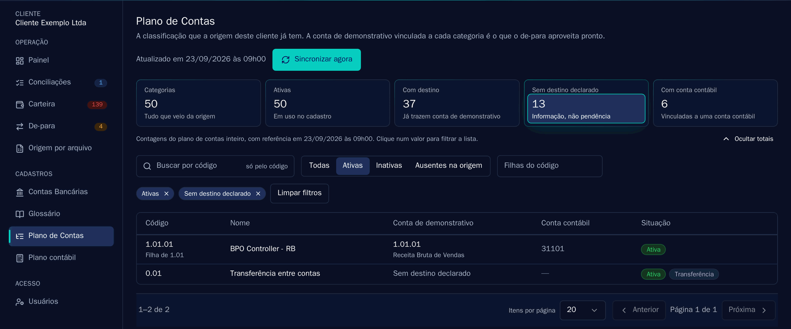
O indicador Sem destino declarado merece atenção porque é fácil de ler errado. Ele não é uma pendência: transferências entre contas próprias e categorias totalizadoras simplesmente não têm conta de demonstrativo, e isso é correto. O sistema nunca inventa um destino para elas.
Esse vínculo que a origem já declara é aproveitado no de-para como sugestão, o que poupa boa parte da digitação inicial. Uma categoria que deixa de existir na origem não é apagada aqui, ela passa a constar como ausente, porque pode haver decisão de de-para apontando para ela.
O plano contábil é o plano de contas do sistema onde o escritório de fato lança, e ele é importado por planilha, por cliente. O modelo tem quatro colunas: código reduzido, nome, tipo (analítica ou sintética) e, opcionalmente, classificação.
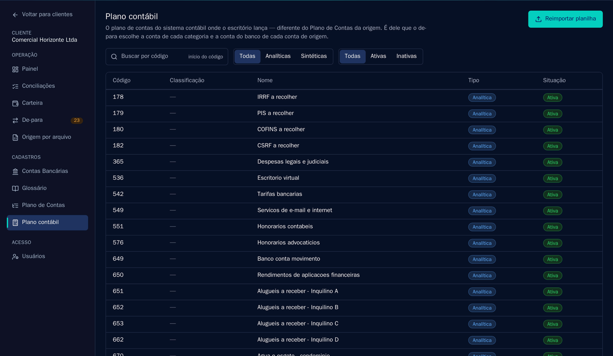
Uma partida tem dois lados. O lado da categoria vem do de-para; o lado do banco vem daqui: para cada conta de origem do cliente (cada conta corrente, cartão ou aplicação), indica-se qual conta contábil a representa. Há ainda a possibilidade de definir uma conta padrão, usada quando o arquivo enviado pelo cliente não traz a informação de conta.
Se uma linha tiver categoria decidida mas nenhuma conta de banco resolvível, a materialização é bloqueada com um aviso que aponta exatamente essa configuração. É proposital: um arquivo contábil com um lado da partida em branco seria recusado na importação, ou pior, aceito errado.
O glossário é o vocabulário contábil daquele cliente, escrito uma vez e usado em todas as conciliações seguintes. É onde mora o conhecimento que hoje costuma ficar na cabeça de quem fecha o mês.
Cada entrada tem um tipo:
| Tipo | Para que serve | Exemplo |
|---|---|---|
| Categoria | Explica quando uma categoria do plano deve ser usada, e quando não deve. | “Compra de insumos: farinha, fermento e açúcar. Não usar para embalagem, que tem categoria própria.” |
| Fornecedor típico | Registra quem é um fornecedor recorrente e como ele aparece no extrato. | “Moinho Santa Clara: fornecedor de farinha, boletos quinzenais entre R$ 2.000 e R$ 8.000.” |
| Regra de auditoria | Fixa uma regra de classificação que vale para aquele cliente. | “IOF nunca é juros: vai para despesa financeira própria.” |
Essas entradas são usadas como referência na análise de classificação. Uma regra registrada hoje passa a ser cobrada em toda conciliação daquele cliente, inclusive quando quem revisa for outra pessoa.
Capítulo 6
Na tela Conciliações do cliente, o botão de criar abre uma gaveta lateral. São três decisões: a conta, o mês e os arquivos.
Depois de ler o arquivo, o sistema soma o que extraiu e confere contra o saldo declarado no próprio documento. Se a conta não fechar, a confirmação da prévia é bloqueada e o motivo é exibido. É a rede que pega o arquivo truncado, a página que faltou e o PDF que veio cortado, antes que uma conciliação incompleta entre no sistema.
Confirmada a criação, três coisas acontecem em segundo plano, nesta ordem:
O arquivo enviado não fica guardado. Ele é processado em memória e descartado; o que permanece é o resultado estruturado da leitura.
Esta é a parte que precisa ser previsível, e por isso ela é publicada em detalhe. Não há modelo estatístico, aprendizado ou heurística: são regras fixas.
| Critério | Regra |
|---|---|
| Valor | Diferença de até R$ 0,01 é considerada o mesmo valor. Acima disso, não é par. |
| Data | Mesma data: conciliado. De 1 a 3 dias de diferença: conciliado com data divergente, e uma anomalia é registrada. Acima de 3 dias: não é par. |
| Fornecedor | Entra como desempate quando dois candidatos empatam em valor e data. A semelhança entre o nome no extrato e o cadastro do ERP favorece o par mais provável, mas nunca elimina um candidato sozinho. |
| Exclusividade | Um lançamento do ERP casa com uma única linha do extrato, e vice-versa. Não existe par repetido. |
O cruzamento acontece em passadas, da evidência mais forte para a mais fraca: primeiro todos os pares de data exata, depois os de um dia de diferença, e assim por diante. Isso impede que uma linha ambígua, processada antes, leve o lançamento que pertencia a outra.
Três dias cobrem o caso real de pagamento feito na sexta e compensado na segunda. O valor não é configurável de propósito: uma tolerância ajustável vira uma discussão por cliente, e o resultado de uma conciliação deixaria de ser comparável com o de outra.
A tela da conciliação abre com o resumo em cartões, o confronto de saldos e os arquivos que a compõem. Abaixo, quatro abas organizam o que precisa de atenção.
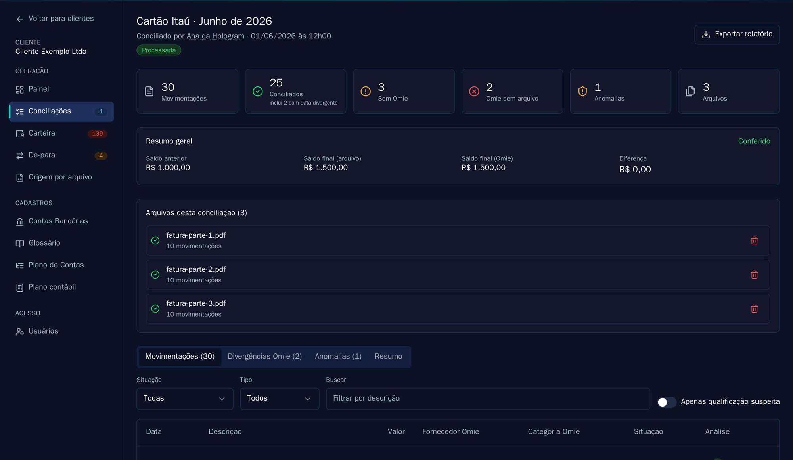
| Aba | O que traz |
|---|---|
| Movimentações | Todas as linhas do extrato, com a situação de cada uma: conciliada, conciliada com data divergente, sem correspondência no ERP ou ignorada na revisão. |
| Divergências Omie | O contrário: o que está lançado no ERP e não apareceu no extrato. Inclui títulos previstos e atrasados. |
| Anomalias | Os apontamentos da análise, com severidade e status. |
| Resumo | Os totais consolidados da conciliação. |
Cada aba tem filtros próprios e busca por descrição. Qualquer linha aceita uma observação escrita pelo revisor, que fica salva na conciliação e sai no relatório.
Anomalia é tudo que passou pelo cruzamento e ainda assim merece um olhar humano. O caso mais interessante não é o erro de soma: é a classificação suspeita, quando o valor está certo mas a categoria não parece a correta para aquele cliente.
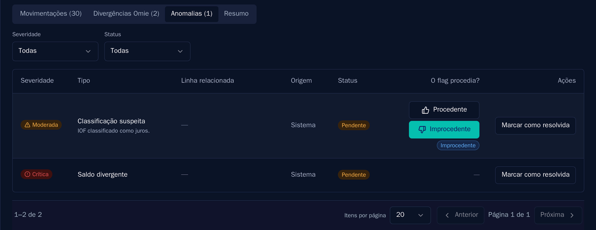
O veredito serve para duas coisas. A primeira é operacional: marcar como Procedente ou Improcedente deixa registrado o que foi decidido, com autor e data. A segunda é de qualidade: um tipo de apontamento que é sempre julgado improcedente num cliente é sinal de que falta uma regra no glossário daquele cliente.
Resolver uma anomalia é uma ação separada do veredito, e as duas convivem: um apontamento pode ser procedente e já resolvido, ou improcedente e encerrado sem ação.
As compras de fatura de cartão que não têm lançamento correspondente no ERP costumavam virar uma lista para alguém redigitar. O Hologram OS lança essas linhas diretamente na conta do cartão no Omie.
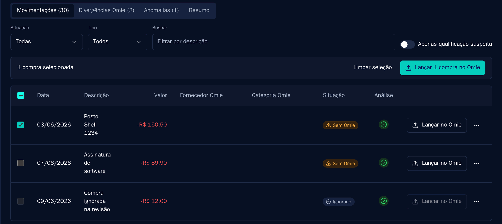
O fluxo é: selecionar as linhas, classificar a categoria (o que pode ser feito em lote), conferir o resumo e confirmar. Cada linha vira um lançamento, com data, valor, categoria e a descrição da compra como observação.
Estorno é bloqueado. A representação de crédito na API do ERP ainda não foi validada pela equipe, e lançar um estorno no palpite poderia registrá-lo como uma segunda despesa. Enquanto não houver certeza, o sistema recusa.
Falha de comunicação nunca reenvia às cegas. Se a resposta do ERP não chegar, a linha fica marcada para conferência manual em vez de ser lançada de novo. O critério interno é explícito: um único lançamento duplicado em produção e o recurso é desligado inteiro.
Este é o único ponto em que a plataforma escreve no ERP. Todo o resto é leitura. Por ser uma escrita na contabilidade do cliente, o recurso é liberado ambiente a ambiente, de forma consciente.
O botão Exportar relatório gera a planilha completa da conciliação: as movimentações com a situação de cada uma, as divergências, as anomalias e o resumo. É o arquivo que se arquiva no fechamento ou se envia a quem pediu explicação.
O Painel do cliente resume o fechamento do mês corrente: as conciliações do mês, as anomalias em aberto, as compras do cartão ainda não lançadas no Omie e o andamento do de-para em cada destino. Abaixo vêm a carteira em aberto, o fluxo previsto pelos vencimentos e a atividade recente, com o estado da origem.
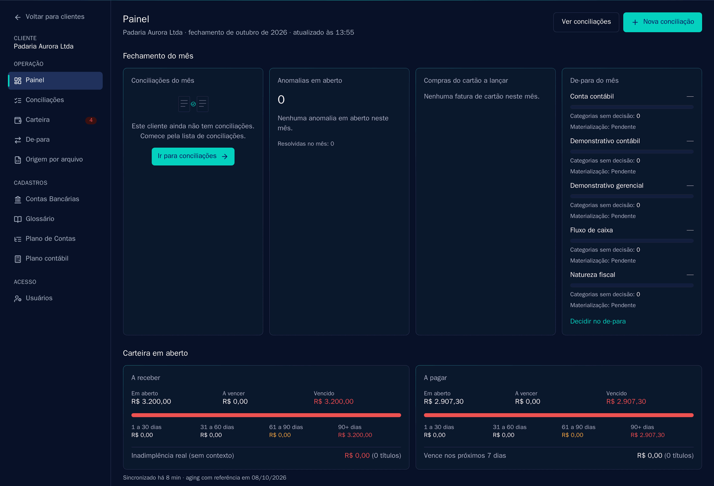
Capítulo 7
A conciliação responde “o extrato bate com o ERP?”. A ponte contábil responde outra pergunta: “o mês inteiro deste cliente, classificado do jeito que o escritório decidiu, cabe em um arquivo que o sistema contábil importa?”. São caminhos independentes, e o segundo é onde o escritório ganha escala.
A ponte não lê a conciliação. Ela trabalha sobre uma base própria: todos os lançamentos do cliente em uma competência, vindos da origem, sem recorte de conta. Essa base é atualizada pelo botão de sincronizar, dentro da tela do de-para.
A sincronização nunca apaga. Um lançamento que existia e não veio na nova leitura é marcado como ausente na origem, e continua visível. O que sumiu do ERP não some do histórico do escritório sem deixar rastro.
Para o cliente que não tem ERP, a mesma base é alimentada pela planilha que ele manda todo mês. A configuração é feita uma única vez, na aba Origem por arquivo.
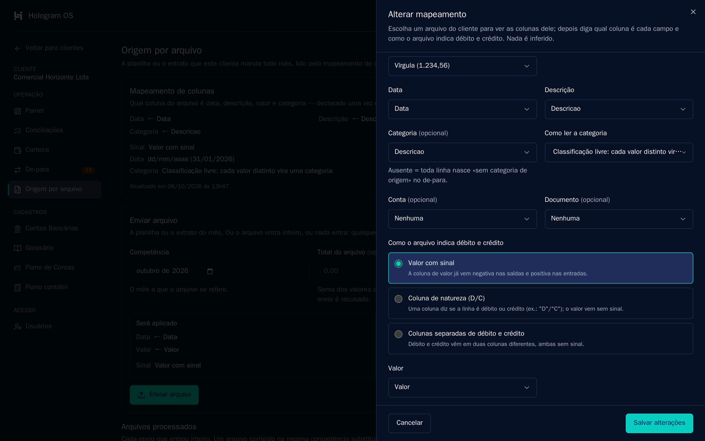
Declara-se qual coluna é a data, qual é a descrição, qual é o valor e qual é a categoria, além do formato numérico. A convenção de sinal é escolhida explicitamente entre três possibilidades:
Feito o mapeamento, o envio mensal é direto: escolhe-se a competência, anexa-se o arquivo e, opcionalmente, informa-se o total esperado para conferência. As linhas entram na base de movimentos exatamente como as do ERP entrariam, e seguem para o de-para pelo mesmo caminho.
Cabeçalho que não bate com o mapeamento, linha inválida ou total declarado divergente resultam em recusa, com o motivo apontado, e nenhuma linha é gravada. Enviar o mesmo arquivo duas vezes é recusado; enviar uma versão corrigida da mesma competência substitui a anterior, e as linhas antigas passam a constar como ausentes.
Aqui mora a decisão central do Hologram OS: para onde cada categoria de origem vai, em cada destino.
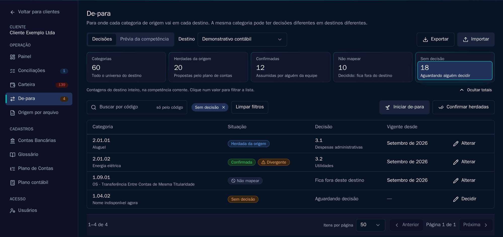
| Estado | O que quer dizer |
|---|---|
| Herdada da origem | O plano de contas do ERP já declara um destino para essa categoria, e a plataforma propõe o mesmo. Basta confirmar. |
| Confirmada | Alguém da equipe assumiu a decisão, herdada ou digitada. |
| Não mapear | Decisão explícita de que aquela categoria fica fora daquele destino. Transferência entre contas próprias no demonstrativo é o caso clássico. |
| Sem decisão | Ninguém decidiu ainda. É o que falta para fechar a competência. |
“Não mapear” e “sem decisão” são coisas diferentes, e a distinção importa: a primeira é uma decisão tomada, a segunda é trabalho pendente.
Toda decisão vale a partir de uma competência. Mudar a decisão de uma categoria não reescreve o passado: cria uma vigência nova, e o que já foi fechado continua explicado pela decisão que valia na época. Tentar alterar retroativamente uma competência já materializada é recusado.
Três recursos aceleram a configuração inicial: confirmar todas as herdadas de uma vez, exportar as decisões em planilha para preencher fora do sistema e importar a planilha preenchida de volta. Na importação, uma conta inválida faz a planilha inteira ser recusada, para não deixar metade do de-para aplicada.
A aba Prévia da competência mostra como o mês fica com as decisões atuais, antes de qualquer coisa ser fechada.
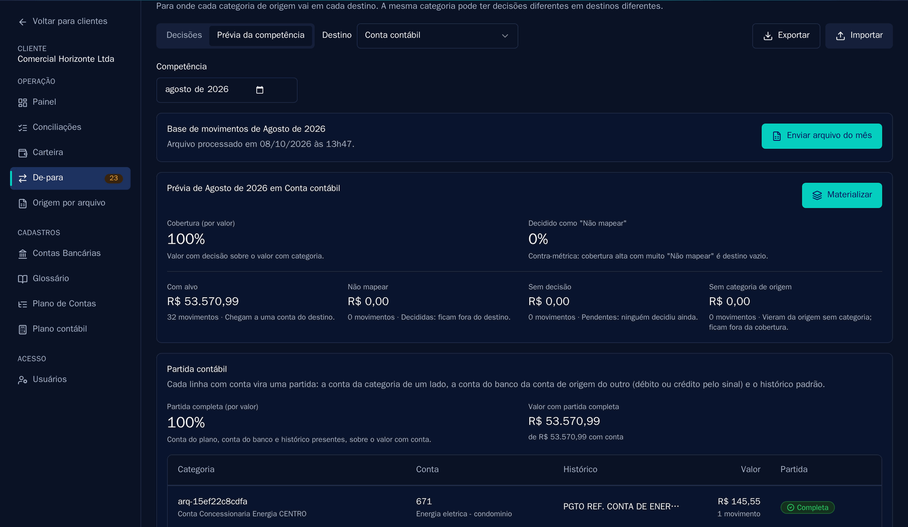
Dois números resumem a prévia, e os dois são calculados por valor, não por quantidade de linhas:
A partida é derivada do sinal do lançamento, nunca do texto. Uma entrada debita a conta do banco e credita a conta decidida para a categoria; uma saída faz o contrário. O lado do banco vem da associação configurada na seção 5.5, e o histórico padrão é o texto que o escritório definiu ao decidir a categoria.
Materializar fecha a competência naquele destino. Gera uma versão numerada, com tudo congelado: os códigos, os valores, a vigência que decidiu cada linha e o histórico do momento. Reimportar o plano contábil depois, ou trocar uma decisão, não muda o que já foi materializado. Se for preciso refazer, materializa-se de novo e nasce a versão seguinte, sem que a anterior deixe de existir.
Da versão materializada sai o arquivo que a contabilidade importa. A seção fica na própria tela do de-para, abaixo da prévia.
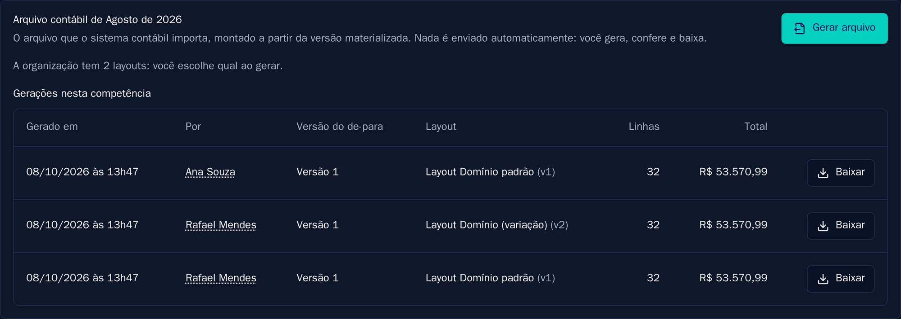
Três garantias definem essa etapa:
O formato do arquivo é uma configuração da organização, não código: quais colunas, em que ordem, separador, codificação, formato de data e de valor. Existe um modelo pronto para o padrão Domínio, e a partir dele criam-se variações.
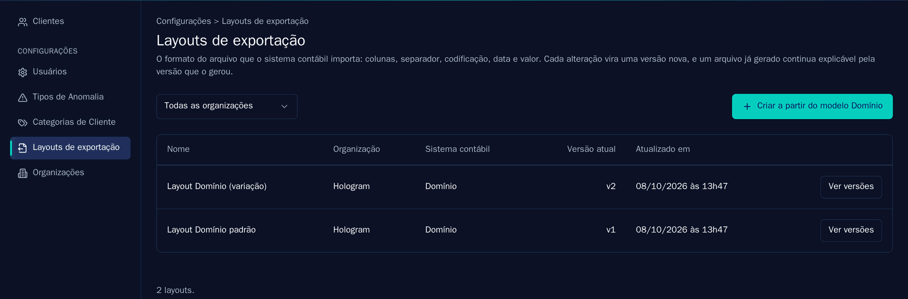
Capítulo 8
A conciliação sempre pede uma conta e um mês. A carteira faz o recorte oposto: todos os títulos a pagar e a receber em aberto, de todas as contas, sem recorte de período. É esse recorte que faz aparecer o título vencido há quatro meses, que nenhuma conciliação mensal traria.
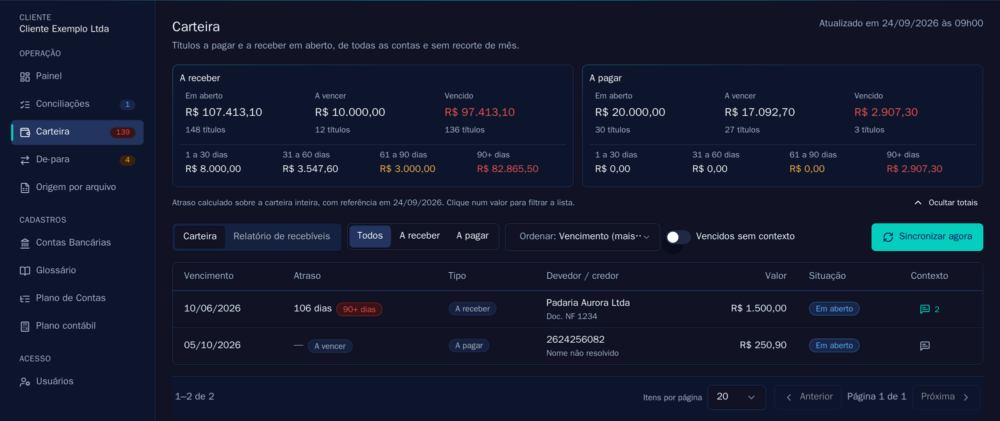
Os valores do topo são calculados sobre a carteira inteira, não sobre a página visível. O atraso é medido na data da consulta e aberto em quatro faixas: 1 a 30, 31 a 60, 61 a 90 e mais de 90 dias. A lista abaixo aceita filtro por tipo, ordenação e busca, e o cabeçalho acompanha a rolagem.
A carteira é atualizada por uma rotina diária. O botão Sincronizar agora força a atualização quando se precisa da posição do momento, e a data da última atualização fica sempre visível ao lado.
Um título vencido nem sempre é inadimplência. Pode haver acordo, antecipação, nota a cancelar ou cobrança suspensa. O contexto é o registro dessa informação no próprio título.
Cada registro tem um tipo, um texto livre, o autor e a data. O histórico é acumulativo: um contexto novo não apaga o anterior, e nada disso altera o título no ERP. A coluna Contexto da lista mostra quantos registros cada título tem, o que permite ver de relance o que já foi tratado.
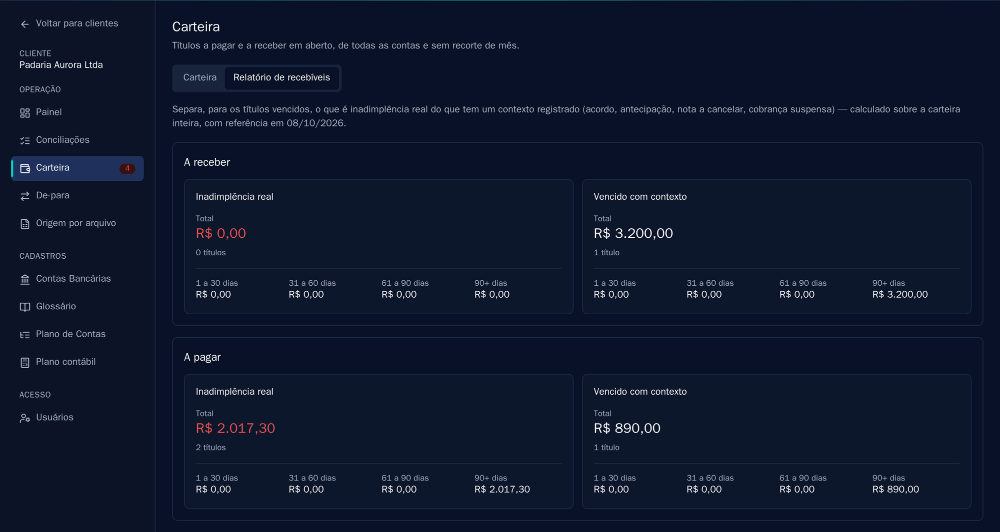
O relatório usa o contexto mais recente de cada título para separar dois grupos: inadimplência real (títulos vencidos sem contexto, ou marcados como perda provável) e vencido com contexto (aquilo que já tem explicação registrada). É a diferença entre “temos R$ 97 mil vencidos” e “temos R$ 3 mil de inadimplência real, o resto está acordado”.
Capítulo 9
Em Configurações > Usuários, o administrador cadastra e edita a equipe do escritório. Além de criar e desativar usuários, é ali que se define quem é gerente e quem é administrador.
Quando alguém da equipe muda de escritório, existe uma ação específica de transferência, em vez de apagar e recriar o usuário. A transferência preserva o histórico da pessoa, remove os acessos que não fazem mais sentido e é recusada enquanto ela for responsável por algum cliente ativo, para que nenhum cliente fique órfão.
Dentro de cada cliente há uma seção de usuários, onde se concede acesso às pessoas da empresa atendida. Elas entram com o próprio login e enxergam apenas aquele cliente: nem a lista de clientes do escritório, nem qualquer dado de outra empresa.
É o caminho natural para tirar da caixa de entrada as perguntas de rotina. Em vez de pedir o relatório por e-mail, o cliente entra e consulta a conciliação, a carteira e os títulos que já têm contexto registrado.
Quando um cliente deixa a carteira, a saída não é apagar tudo. O encerramento separa quem o cliente é do que aconteceu:
O encerramento é terminal. Um cliente que volta entra como cadastro novo. Para o caso em que o titular exige o apagamento completo dos dados, existe a exclusão definitiva, que remove tudo, e que é conduzida pela administração da plataforma.
Capítulo 10
Um escritório contábil guarda, em nome de terceiros, alguns dos dados mais sensíveis que uma empresa tem. Estas são as decisões de projeto do Hologram OS que sustentam essa responsabilidade, descritas sem jargão.
Os dados sensíveis de um cliente (credenciais, descrições de lançamento, observações, nomes de categoria e histórico) são cifrados com uma chave exclusiva dele, e o conteúdo cifrado de um cliente não é decifrável no contexto de outro. A chave de cada cliente é guardada trancada por uma chave-mestra que fica num cofre de chaves gerenciado, do qual nunca sai; ninguém da equipe tem acesso direto a ela.
É essa arquitetura que torna o encerramento de cliente realmente efetivo: destruir a chave de um cliente basta para tornar todo o conteúdo sigiloso dele ilegível de uma vez.
O primeiro nível separa clientes: um usuário do cliente alcança apenas a própria empresa. O segundo separa organizações: o escritório vizinho hospedado na mesma plataforma não alcança nem o nome dos seus clientes, nem os nomes da sua equipe.
A verificação não acontece só na tela. Cada consulta ao banco de dados já sai restrita ao que o usuário pode ver, de modo que uma tentativa de acessar um recurso de outro cliente responde como se ele não existisse, sem revelar nem que existe.
Dois pontos do fluxo usam um provedor externo de inteligência artificial, a Anthropic:
O envio é feito pela API comercial da Anthropic, sob os termos comerciais dela. Por esses termos, o conteúdo enviado não é usado para treinar modelos. Pela política de retenção da API, o conteúdo enviado e a resposta são apagados pelo provedor em até 30 dias, com exceções previstas: conteúdo sinalizado pelos sistemas automáticos de segurança do provedor como violação da política de uso pode ser guardado por até 2 anos, e há retenção quando a lei exige. O processamento acontece fora do Brasil: o provedor armazena dados apenas nos Estados Unidos e não oferece região na América do Sul.
O cruzamento com o ERP não usa inteligência artificial: são as regras fixas da seção 6.3. A planilha da origem por arquivo também não passa pelo provedor, porque é lida pelo mapeamento de colunas. E a IA nunca decide: ela aponta, e quem decide é uma pessoa.
Valores e datas ficam em texto legível, de propósito: são números sem identificação, necessários para ordenar, filtrar e somar.
Visualizações e exportações de relatório, além de todas as tentativas de acesso negadas, ficam registradas. O registro guarda apenas identificadores, data e hora, nunca o conteúdo consultado. Navegação dentro do próprio cliente não gera registro, para que a trilha continue útil em vez de virar ruído.
A plataforma roda em infraestrutura gerenciada, com monitoramento ativo. Falhas no processamento de uma conciliação, na comunicação com o ERP ou em qualquer rotina automática geram alerta para a equipe responsável, independentemente de alguém ter reportado o problema.
Capítulo 11
Um manual honesto diz também onde o produto para. Estes são os limites atuais do Hologram OS, com o motivo de cada um. Nenhum deles é acidental.
| Limite | Motivo |
|---|---|
| Estorno não é lançado no ERP | A representação de crédito na API do ERP não foi validada contra a operação real. Lançar no palpite poderia registrar um estorno como segunda despesa. |
| O lançamento no ERP cobre fatura de cartão | O fluxo foi construído e verificado para a conta de cartão. Outras contas continuam apenas em leitura. |
| Um cliente tem um tipo de origem | Permitir ERP e arquivo ao mesmo tempo abriria caminho para a mesma movimentação entrar duas vezes. |
| Tolerância de data fixa em 3 dias | Tolerância configurável por cliente tornaria o resultado de uma conciliação incomparável com o de outra. |
| O arquivo contábil não é enviado sozinho | A importação no sistema contábil é um ato deliberado do escritório, e assim permanece. |
| Integração bancária direta | Hoje os lançamentos entram pelo ERP ou por arquivo. A conexão direta com bancos está no plano de evolução, não no produto atual. |
Cada ciclo de desenvolvimento termina com uma validação feita por uma pessoa, fora do ambiente automatizado: a suíte completa de testes, o teste de acessibilidade da interface em três temas e um roteiro de uso ponta a ponta, na tela. O que não passa nessa validação não é entregue. É a mesma disciplina que sustenta as afirmações deste manual.
Apêndice A
O Hologram OS prefere recusar com explicação a aceitar com defeito. Esta tabela reúne as recusas mais comuns, o que cada uma significa e qual é a saída.
| O que aparece | O que significa | O que fazer |
|---|---|---|
| Já existe conciliação para esta conta e este mês | O recorte conta mais mês é único. | Abrir a conciliação existente e anexar o arquivo a ela. |
| Arquivo já enviado nesta conciliação | A mesma parte foi anexada duas vezes. | Conferir as partes já anexadas na lista de arquivos. |
| O saldo extraído não fecha | A soma das linhas lidas não bate com o saldo declarado no documento. | Conferir se o arquivo está completo. Extrato com páginas faltando é a causa mais comum. |
| O arquivo excede o limite | Arquivo acima de 20 MB. | Dividir o extrato em partes e anexar todas à mesma conciliação. |
| Este cliente não tem origem conectada | Falta conectar o ERP ou a origem por arquivo. | Ir a Contas Bancárias do cliente e conectar a origem. |
| A origem está com erro | A credencial foi recusada, em geral porque mudou no ERP. | Reconectar com a credencial atual. |
| Cabeçalho divergente no envio de arquivo | As colunas do arquivo não batem com o mapeamento configurado. | Ajustar o mapeamento ou pedir ao cliente o arquivo no formato de sempre. |
| Total declarado divergente | A soma das linhas não bate com o total informado no envio. | Conferir o arquivo antes de reenviar. Nada foi gravado. |
| Conta do banco pendente | Há linha com categoria decidida e sem conta contábil para o lado do banco. | Associar a conta de origem a uma conta contábil, na tela do plano contábil. |
| Cobertura parcial na geração | Existem categorias sem decisão na competência. | Decidir as pendentes no de-para e materializar de novo. |
| Texto não cabe no layout | Um histórico contém caractere que quebraria o arquivo, como o separador de colunas. | Ajustar o histórico padrão da decisão. Nada é truncado automaticamente. |
| Cliente encerrado | Toda escrita em cliente encerrado é bloqueada. | Apenas leitura. Um cliente que retorna entra como cadastro novo. |
Apêndice B
Apêndice C
| Termo | Definição |
|---|---|
| Anomalia | Apontamento gerado pela análise, com severidade e status, para uma situação que merece olhar humano. |
| Base de movimentos | Os lançamentos do cliente em uma competência, independentemente de conta, usados pela ponte contábil. |
| Carteira (de clientes) | O conjunto de clientes que um gerente alcança. |
| Carteira (de títulos) | Os títulos a pagar e a receber em aberto de um cliente. |
| Competência | O mês de referência dos dados. |
| Conciliação | O confronto de uma conta bancária com o ERP em um mês. |
| Contexto do título | Registro tipado que explica por que um título vencido não é inadimplência. |
| Cobertura | Percentual do valor com categoria que já tem decisão de de-para. |
| De-para | A decisão de para onde cada categoria de origem vai, em cada destino. |
| Destino | O uso dado à classificação: conta contábil, demonstrativo, fluxo de caixa e outros. |
| Divergência Omie | Lançamento que existe no ERP e não apareceu no extrato. |
| Glossário | O vocabulário contábil de um cliente: categorias, fornecedores típicos e regras de auditoria. |
| Materialização | O fechamento de uma competência em um destino, em versão imutável. |
| Organização | O escritório contábil ou BPO que usa o Hologram OS. |
| Origem | De onde vêm as contas e os lançamentos do cliente. |
| Partida | O par de contas, débito e crédito, de uma linha do arquivo contábil. |
| Plano contábil | O plano de contas do sistema contábil de destino, importado por cliente. |
| Plano de Contas | A classificação que o ERP do cliente já usa. |
| Sem Omie | Linha do extrato sem lançamento correspondente no ERP. |
| Veredito | A resposta do revisor sobre se um apontamento procedia. |
| Vigência | A competência a partir da qual uma decisão de de-para passa a valer. |